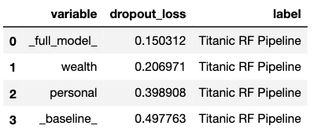

16 Variable-importance Measures
16.1 Introduction
In this chapter, we present a method that is useful for the evaluation of the importance of an explanatory variable. The method may be applied for several purposes.
- Model simplification: variables that do not influence a model’s predictions may be excluded from the model.
- Model exploration: comparison of variables’ importance in different models may help in discovering interrelations between the variables. Also, the ordering of variables in the function of their importance is helpful in deciding in which order should we perform further model exploration.
- Domain-knowledge-based model validation: identification of the most important variables may be helpful in assessing the validity of the model based on domain knowledge.
- Knowledge generation: identification of the most important variables may lead to the discovery of new factors involved in a particular mechanism.
The methods for assessment of variable importance can be divided, in general, into two groups: model-specific and model-agnostic.
For linear models and many other types of models, there are methods of assessing explanatory variable’s importance that exploit particular elements of the structure of the model. These are model-specific methods. For instance, for linear models, one can use the value of the normalized regression coefficient or its corresponding p-value as the variable-importance measure. For tree-based ensembles, such a measure may be based on the use of a particular variable in particular trees. A great example in this respect is the variable-importance measure based on out-of-bag data for a random forest model (Leo Breiman 2001a), but there are also other approaches like methods implemented in the XgboostExplainer package (Foster 2017) for gradient boosting and randomForestExplainer (Paluszynska and Biecek 2017) for random forest.
In this book, we focus on a model-agnostic method that does not assume anything about the model structure. Therefore, it can be applied to any predictive model or ensemble of models. Moreover, and perhaps even more importantly, it allows comparing an explanatory-variable’s importance between models with different structures.
16.2 Intuition
We focus on the method described in more detail by Fisher, Rudin, and Dominici (2019). The main idea is to measure how much does a model’s performance change if the effect of a selected explanatory variable, or of a group of variables, is removed? To remove the effect, we use perturbations, like resampling from an empirical distribution or permutation of the values of the variable.
The idea is borrowed from the variable-importance measure proposed by Leo Breiman (2001a) for random forest. If a variable is important, then we expect that, after permuting the values of the variable, the model’s performance (as captured by one of the measures discussed in Chapter 15) will worsen. The larger the change in the performance, the more important is the variable.
Despite the simplicity of the idea, the permutation-based approach to measuring an explanatory-variable’s importance is a very powerful model-agnostic tool for model exploration. Variable-importance measures obtained in this way may be compared between different models. This property is discussed in detail in Section 16.5.
16.3 Method
Consider a set of \(n\) observations for a set of \(p\) explanatory variables and dependent variable \(Y\). Let \(\underline{X}\) denote the matrix containing, in rows, the (transposed column-vectors of) observed values of the explanatory variables for all observations. Denote by \(\underline{y}\) the column vector of the observed values of \(Y\). Let \(\underline{\hat{y}}=(f(\underline{x}_1),\ldots,f(\underline{x}_n))'\) denote the corresponding vector of predictions for \(\underline{y}\) for model \(f()\).
Let \(\mathcal L(\underline{\hat{y}}, \underline X, \underline{y})\) be a loss function that quantifies goodness-of-fit of model \(f()\). For instance, \(\mathcal L()\) may be the value of log-likelihood (see Chapter 15) or any other model performance measure discussed in previous chapter. Consider the following algorithm:
- Compute \(L^0 = \mathcal L(\underline{\hat{y}}, \underline X, \underline{y})\), i.e., the value of the loss function for the original data. Then, for each explanatory variable \(X^j\) included in the model, do steps 2-5.
- Create matrix \(\underline{X}^{*j}\) by permuting the \(j\)-th column of \(\underline{X}\), i.e., by permuting the vector of observed values of \(X^j\).
- Compute model predictions \(\underline{\hat{y}}^{*j}\) based on the modified data \(\underline{X}^{*j}\).
- Compute the value of the loss function for the modified data: \[ L^{*j} = \mathcal L(\underline{\hat{y}}^{*j}, \underline{X}^{*j}, \underline{y}). \]
- Quantify the importance of \(X^j\) by calculating \(vip_{Diff}^j = L^{*j} - L^0\) or \(vip_{Ratio}^j = L^{*j} / L^0\).
Note that the use of resampling or permuting data in Step 2 involves randomness. Thus, the results of the procedure may depend on the obtained configuration of resampled/permuted values. Hence, it is advisable to repeat the procedure several (many) times. In this way, the uncertainty associated with the calculated variable-importance values can be assessed.
The calculations in Step 5 “normalize” the value of the variable-importance measure with respect to \(L^0\). However, given that \(L^0\) is a constant, the normalization has no effect on the ranking of explanatory variables according to \(vip_{Diff}^j\) nor \(vip_{Ratio}^j\). Thus, in practice, often the values of \(L^{*j}\) are simply used to quantify a variable’s importance.
16.4 Example: Titanic data
In this section, we illustrate the use of the permutation-based variable-importance evaluation by applying it to the random forest model for the Titanic data (see Section 4.2.2). Recall that the goal is to predict survival probability of passengers based on their gender, age, class in which they travelled, ticket fare, the number of persons they travelled with, and the harbour they embarked the ship on.
We use the area under the ROC curve (AUC, see Section 15.3.2.2) as the model-performance measure. Figure 16.1 shows, for each explanatory variable included in the model, the values of \(1-AUC^{*j}\) obtained by the algorithm described in the previous section. Additionally, the plot indicates the value of \(L^0\) by the vertical dashed-line at the left-hand-side of the plot. The lengths of the bars correspond to \(vip_{Diff}^j\) and provide the variable-importance measures.

Figure 16.1: Single-permutation-based variable-importance measures for the explanatory variables included in the random forest model for the Titanic data using 1-AUC as the loss function.
The plot in Figure 16.1 suggests that the most important variable in the model is gender. This agrees with the conclusions drawn in the exploratory analysis presented in Section 4.1.1. The next three important variables are class (passengers travelling in the first class had a higher chance of survival), age (children had a higher chance of survival), and fare (owners of more expensive tickets had a higher chance of survival).
To take into account the uncertainty related to the use of permutations, we can consider computing the mean values of \(L^{*j}\) over a set of, say, 10 permutations. The plot in Figure 16.2 presents the mean values. The only remarkable difference, as compared to Figure 16.1, is the change in the ordering of the sibsp and parch variables.

Figure 16.2: Means (over 10 permutations) of permutation-based variable-importance measures for the explanatory variables included in the random forest model for the Titanic data using 1-AUC as the loss function.
Plots similar to those presented in Figures 16.1 and 16.2 are useful for comparisons of a variable’s importance in different models. Figure 16.3 presents single-permutation results for the random forest, logistic regression (see Section 4.2.1), and gradient boosting (see Section 4.2.3) models. The best result, in terms of the smallest value of \(L^0\), is obtained for the random forest model (as indicated by the location of the dashed lines in the plots). Note that the indicated \(L^0\) value for the model is different from the one indicated in Figure 16.1. This is due to the difference in the set of (random) permutations used to compute the two values.

Figure 16.3: Single-permutation-based variable-importance measures for the random forest, gradient boosting, and logistic regression models for the Titanic data with 1-AUC as the loss function. Note the different starting locations for the bars, due to differences in the AUC value obtained for the original data for different models.
The plots in Figure 16.3 indicate that gender is the most important explanatory variable in all three models, followed by class and age. Variable fare, which is highly correlated with class, is important in the random forest and SVM models, but not in the logistic regression model. On the other hand, variable parch is, essentially, not important, neither in the gradient boosting nor in the logistic regression model, but it has some importance in the random forest model. Country is not important in any of the models. Overall, Figure 16.3 indicates that, in the random forest model, all variables (except of country) have got some importance, while in the other two models the effect is mainly limited to gender, class, and age (and fare for the gradient boosting model).
16.5 Pros and cons
Permutation-based variable importance offers several advantages. It is a model-agnostic approach to the assessment of the influence of an explanatory variable on a model’s performance. The plots of variable-importance measures are easy to understand, as they are compact and present the most important variables in a single graph. The measures can be compared between models and may lead to interesting insights. For example, if variables are correlated, then models like random forest are expected to spread importance across many variables, while in regularized-regression models the effect of one variable may dominate the effect of other correlated variables.
The same approach can be used to measure the importance of a single explanatory variable or a group of variables. The latter is useful for “aspects,” i.e., groups of variables that are complementary to each other or are related to a similar concept. For example, in the Titanic example, the fare and class variables are related to the financial status of a passenger. Instead of assessing the importance of each of these variables separately, we may be interested in their joint importance. Toward this aim, we may compute the permutation-based measure by permuting the values of both variables at the same time.
The main disadvantage of the permutation-based variable-importance measure is its dependence on the random nature of the permutations. As a result, for different permutations, we will, in general, get different results. Also, the value of the measure depends on the choice of the loss function \(\mathcal L()\). Thus, there is no single, “absolute” measure.
16.6 Code snippets for R
In this section, we present the implementation of the permutation-based variable-importance measure in the DALEX package for R. The key function is model_parts() that allows computation of the measure. For the purposes of the computation, one can choose among several loss fuctions that include loss_sum_of_squares(), loss_root_mean_square(), loss_accuracy(), loss_cross_entropy(), and loss_one_minus_auc(). For the definitions of the loss functions, see Chapter 15.
For illustration purposes, we use the random forest model apartments_rf for the apartment-prices data (see Section 4.5.2).
We first load the model-object via the archivist hook, as listed in Section 4.5.6. We also load the randomForest package, as the model was fitted by using function randomForest() from this package (see Section 4.5.2) and it is important to have the corresponding predict() function available.
Then we construct the explainer for the model by using the function explain() from the DALEX package (see Section 4.2.6). Note that we use the apartments_test data frame without the first column, i.e., the m2.price variable, in the data argument. This will be the dataset to which the model will be applied (see Section 4.5.5). The m2.price variable is explicitly specified as the dependent variable in the y argument.
library("DALEX")
library("randomForest")
apartments_rf <- archivist::aread("pbiecek/models/fe7a5")
explainer_rf <- DALEX::explain(model = apartments_rf,
data = apartments_test[,-1],
y = apartments_test$m2.price,
label = "Random Forest")A popular loss function is the root-mean-square-error (RMSE) function (15.2). It is implemented in the DALEX package as the loss_root_mean_square() function. The latter requires two arguments: observed, which indicates the vector of observed values of the dependent variable, and predicted, which specifies the object (either vector or a matrix, as returned from the model-specific predict() function) with the predicted values. The original-testing-data value \(L^0\) of RMSE for the random forest model can be obtained by applying the loss_root_mean_square() in the form given below.
loss_root_mean_square(observed = apartments_test$m2.price,
predicted = predict(apartments_rf, apartments_test))## [1] 282.9519To compute the permutation-based variable-importance measure, we apply the model_parts() function. Note that it is a wrapper for function feature_importance() from the ingredients package. The only required argument is explainer, which indicates the explainer-object (obtained with the help of the explain() function, see Section 4.2.6) for the model to be explained. The other (optional) arguments are:
loss_function, the loss function to be used (by default, it is theloss_root_mean_squarefunction).type, the form of the variable-importance measure, with values"raw"resulting in the computation of \(\mathcal L()\),"difference"yielding \(vip_{Diff}^j\), and"ratio"providing \(vip_{Ratio}^j\) (see Section 16.3).variables, a character vector providing the names of the explanatory variables, for which the variable-importance measure is to be computed. By default,variables = NULL, in which case computations are performed for all variables in the dataset.variable_groups, a list of character vectors of names of explanatory variables. For each vector, a single variable-importance measure is computed for the joint effect of the variables which names are provided in the vector. By default,variable_groups = NULL, in which case variable-importance measures are computed separately for all variables indicated in thevariablesargument.B, the number of permutations to be used for the purpose of calculation of the (mean) variable-importance measures, withB = 10used by default. To get a single-permutation-based measure, useB = 1.N, the number of observations that are to be sampled from the data available in the explainer-object for the purpose of calculation of the variable-importance measure; by default,N = 1000is used; ifN = NULL, the entire dataset is used.
To compute a single-permutation-based value of the RMSE for all the explanatory variables included in the random forest model apartments_rf, we apply the model_parts() function to the model’s explainer-object as shown below. We use the set.seed() function to make the process of random selection of the permutation repeatable.
## variable mean_dropout_loss label
## 1 _full_model_ 271.9089 Random Forest
## 2 construction.year 389.4840 Random Forest
## 3 no.rooms 396.0281 Random Forest
## 4 floor 436.6190 Random Forest
## 5 surface 462.7374 Random Forest
## 6 district 794.7619 Random Forest
## 7 _baseline_ 1095.4724 Random ForestNote that the outcome is identical to the following call below (results not shown).
set.seed(1980)
model_parts(explainer = explainer_rf,
loss_function = loss_root_mean_square,
B = 1,
variables = colnames(explainer_rf$data))However, if we use a different ordering of the variables in the variables argument, the result is slightly different:
set.seed(1980)
vars <- c("surface","floor","construction.year","no.rooms","district")
model_parts(explainer = explainer_rf,
loss_function = loss_root_mean_square,
B = 1,
variables = vars)## variable mean_dropout_loss label
## 1 _full_model_ 271.9089 Random Forest
## 2 construction.year 393.1586 Random Forest
## 3 no.rooms 396.0281 Random Forest
## 4 floor 440.9293 Random Forest
## 5 surface 483.1104 Random Forest
## 6 district 794.7619 Random Forest
## 7 _baseline_ 1095.4724 Random ForestThis is due to the fact that, despite the same seed, the first permutation is now selected for the surface variable, while in the previous code the same permutation was applied to the values of the floor variable.
To compute the mean variable-importance measure based on 50 permutations and using the RMSE difference \(vip_{Diff}^j\) (see Section 16.3), we have got to specify the appropriate values of the B and type arguments.
set.seed(1980)
(vip.50 <- model_parts(explainer = explainer_rf,
loss_function = loss_root_mean_square,
B = 50,
type = "difference"))## variable mean_dropout_loss label
## 1 _full_model_ 0.0000 Random Forest
## 2 no.rooms 117.4678 Random Forest
## 3 construction.year 122.4445 Random Forest
## 4 floor 162.4554 Random Forest
## 5 surface 182.4368 Random Forest
## 6 district 563.7343 Random Forest
## 7 _baseline_ 843.0472 Random ForestTo obtain a graphical illustration, we apply the plot() function to the vip.50 object.
The resulting graph is presented in Figure 16.4. The bars in the plot indicate the mean values of the variable-importance measures for all explanatory variables. Box plots are added to the bars to provide an idea about the distribution of the values of the measure across the permutations.

Figure 16.4: Mean variable-importance calculated by using 50 permutations and the root-mean-squared-error loss-function for the random forest model apartments_rf for the apartment-prices data. Plot obtained by using the generic plot() function in R.
Variable-importance measures are a very useful tool for model comparison. We will illustrate this application by considering the random forest model, linear-regression model (Section 4.5.1), and support-vector-machine (SVM) model (Section 4.5.3) for the apartment prices dataset. The models differ in their flexibility and structure; hence, it may be of interest to compare them.
We first load the necessary model-objects via the archivist hooks, as listed in Section 4.5.6.
apartments_lm <- archivist::aread("pbiecek/models/55f19")
apartments_svm <- archivist::aread("pbiecek/models/d2ca0")Then we construct the corresponding explainer-objects. We also load the e1071 package, as it is important to have a suitable predict() function available for the SVM model.
explainer_lm <- DALEX::explain(model = apartments_lm,
data = apartments_test[,-1],
y = apartments_test$m2.price,
label = "Linear Regression")
library("e1071")
explainer_svm <- DALEX::explain(model = apartments_svm,
data = apartments_test[,-1],
y = apartments_test$m2.price,
label = "Support Vector Machine")Subsequently, we compute mean values of the permutation-based variable-importance measure for 50 permutations and the RMSE loss function. Note that we use the set.seed() function to make the process of random selection of the permutation repeatable. By specifying N = NULL we include all the data from the apartments dataset in the calculations.
vip_lm <- model_parts(explainer = explainer_lm, B = 50, N = NULL)
vip_rf <- model_parts(explainer = explainer_rf, B = 50, N = NULL)
vip_svm <- model_parts(explainer = explainer_svm, B = 50, N = NULL)Finally, we apply the plot() function to the created objects to obtain a single plot with the variable-importance measures for all three models.
library("ggplot2")
plot(vip_rf, vip_svm, vip_lm) +
ggtitle("Mean variable-importance over 50 permutations", "") The resulting graph is presented in Figure 16.5. The plots suggest that the best result, in terms of the smallest value of \(L^0\), is obtained for the SVM model (as indicated by the location of the dashed lines in the plots). The length of bars indicates that district is the most important explanatory variable in all three models, followed by surface and floor. Construction year is the fourth most important variable for the random forest and SVM models, but it is not important in the linear-regression model at all. We will investigate the reason for this difference in the next chapter.

Figure 16.5: Mean variable-importance calculated using 50 permutations and the root-mean-squared-error loss for the random forest, support-vector-machine, and linear-regression models for the apartment-prices data.
16.7 Code snippets for Python
In this section, we use the dalex library for Python. The package covers all methods presented in this chapter. It is available on pip and GitHub.
For illustration purposes, we use the titanic_rf random forest model for the Titanic data developed in Section 4.3.2. Recall that the model is developed to predict the probability of survival for passengers of Titanic.
In the first step, we create an explainer-object that will provide a uniform interface for the predictive model. We use the Explainer() constructor for this purpose.
To calculate the variable-importance measure, we use the model_parts() method. By default it performs B = 10 permutations of variable importance calculated on N = 1000 observations.

The obtained results can be visualised by using the plot() method. Results are presented in Figure 16.6.

Figure 16.6: Mean variable-importance calculated by using 10 permutations and the root-mean-squared-error loss-function for the random forest model for the Titanic data.
The model_parts() method in Python allows similar arguments as the corresponding function in the DALEX package in R (see Section 16.6). These include, for example, the loss_function argument (with values like, e.g. ,'rmse' or '1-auc'); the type argument, (with values 'variable_importance', 'ratio', 'difference'); and the variable_groups argument that allows specifying groups of explanatory variables, for which a single variable-importance measure should be computed.
In the code below, we illustrate the use of the variable_groups argument to specify two groups of variables. The resulting plot is presented in Figure 16.7.
vi_grouped = titanic_rf_exp.model_parts(
variable_groups={'personal': ['gender', 'age',
'sibsp', 'parch'],
'wealth': ['class', 'fare']})
vi_grouped.result
Figure 16.7: Mean variable-importance calculated for two groups of variables for the random forest model for the Titanic data.
References
Breiman, Leo. 2001a. “Random Forests.” Machine Learning 45: 5–32. https://doi.org/10.1023/a:1010933404324.
Fisher, Aaron, Cynthia Rudin, and Francesca Dominici. 2019. “All Models Are Wrong, but Many Are Useful: Learning a Variable’s Importance by Studying an Entire Class of Prediction Models Simultaneously.” Journal of Machine Learning Research 20 (177): 1–81. http://jmlr.org/papers/v20/18-760.html.
Foster, David. 2017. XgboostExplainer: An R Package That Makes Xgboost Models Fully Interpretable. https://github.com/AppliedDataSciencePartners/xgboostExplainer/.
Paluszynska, Aleksandra, and Przemyslaw Biecek. 2017. RandomForestExplainer: A Set of Tools to Understand What Is Happening Inside a Random Forest. https://github.com/MI2DataLab/randomForestExplainer.